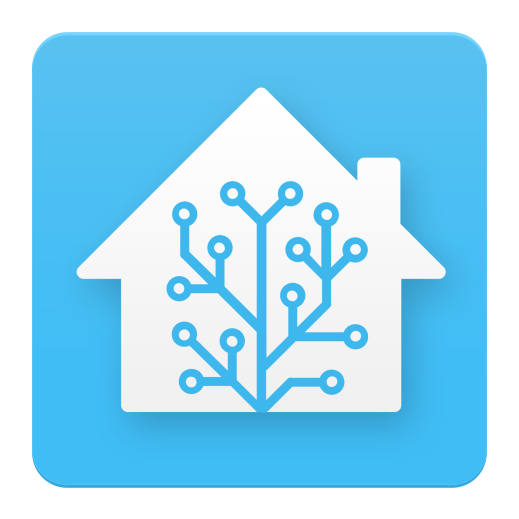
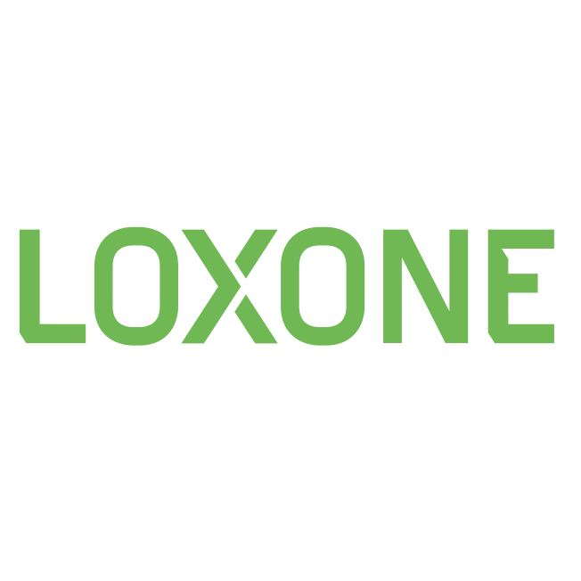

<html>
<body>
<h1>
Hi,
I'm Jens,
A Programmer
<h1/>


<h2>
Here's a bit about me.
<h2/>
I'm a 33 years old Student Developer. I have a strong passion for technology overall, and Application Development specifically. My aim is to build user-centered applications with great UI and User eXperience.
Well-organised person, Problem Solver, independent employee who can work great in a team, with high attention to Detail. Fan of home Automation, festivals and TV series. A Family Person and father of two.
<section id="interest">
Interests
| Home Assistant | Loxone |
|---|---|
|  |  |
All my life I have had a passion for technology. At a young age I was already building my own computer, making websites and even small games. At a certain age, the nightlife started and being actively engaged in technology has stopped. The interest then went a bit to the background, so unfortunately I did not choose an IT direction in school ... After my school career and a few years of work, this passion has come back more and more. I have always been the "family IT person". I'm the point of contact if something does not work or for help with a new purchase, technology related. A few years ago I built my house and of course opted for a home automation system (Loxone). I'm a big fan of automating daily routines and making most things around us "smart". Just by placing some temperature sensors and motion detectors, you can already automate so much. For example, you can program that the shutters must automatically close in the summer as soon as a certain temperature is exceeded. Recently, on top of Loxone, I also started with Home Assistant, an open source platform. This is to be able to go even further in automation and especially to connect everything together in a central system without limitations. Home Assistant therefore acts as a "hub", from there I can program smart logic, dashboards and automation without having to rely on different applications from different suppliers of home automation hardware. Now, for example, I can link nest's doorbell to the outdoor lighting. If someone rings the doorbell when it is dark, the outdoor lighting automatically turns on for a certain amount of time.
TV Series
But enough about automation... While I love thinking of and implementing new features in Home Assistant, I also enjoy sitting in the couch with my wife in the evening after a workday and binging a series on Netflix. This really allows me to completely relax and clear my head.
Festivals & Food
Going out for dinner with my beautiful wife and kids, date night with the wife alone or just with friends. I do that very often! In the summer we regularly go to festivals. I have a very broad taste of music genres, but for a festival I like to choose one with EDM. For example, I try to be present at Tomorrowland every year. I have not yet experienced the amazing atmosphere from there at another festival. Everyone is always so friendly and happy and enjoys the music.
Fitness
Because my father is a bodybuilder, I could be found in the gym at a young age. from the age of 13 to 20 I went to the gym 3 to 4 times a week. You get so much energy from this and a fit body. Unfortunately, this has been shifted to a lower priority since my free time is not infinite and I also like to spend a lot of time with my children. Now I'm still trying to maintain it with a fitness device at my home.
<section id="skills">
Skills & Experience
| HTML |
★★★ |
| CSS |
★★ |
| Javascript |
★ |
| Python |
★★★ |
| ★★ |
Project manager
Windowmakers
-
Project manager
Peeters De Raamproducent
-
CAD-GIS Designer
ODC Milieu
-
Maintenance Technician
Janssen Pharmaceutical
-
<section id="CV">
Curriculum Vitae
<section id="contact">